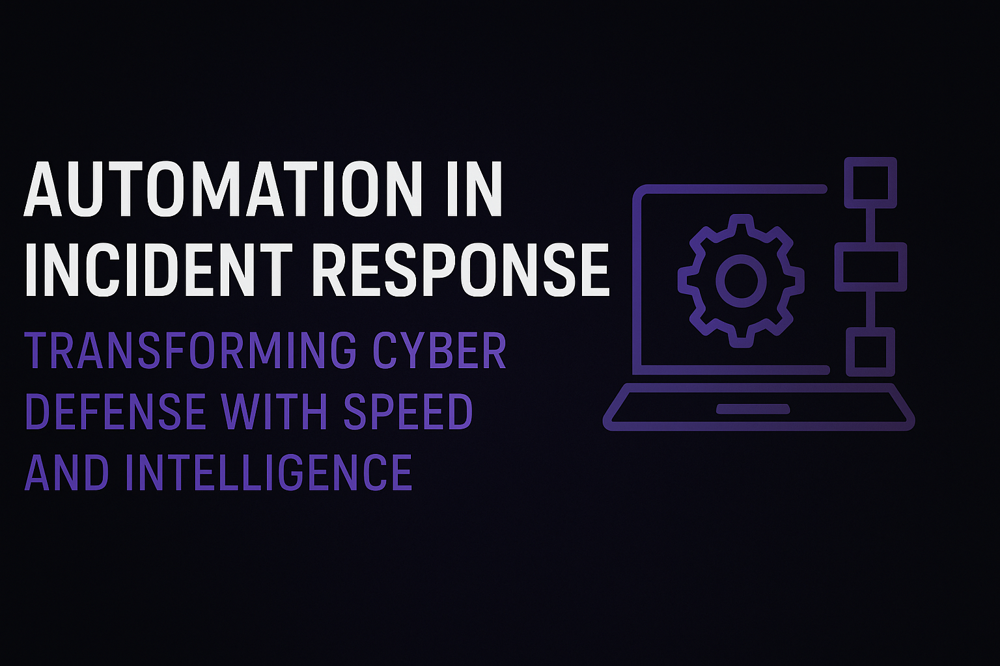

Automation in Incident Response: Transforming Cyber Defense with Speed and Intelligence
August 14, 2025 · Incident Response · Cloud Security
In 2025, the pace, scale, and sophistication of cyber incidents in cloud environments have reached a tipping point. Attackers now exploit automation, AI, and cloud-native misconfigurations at machine speed. To stay ahead, organizations must shift from reactive models to automated, orchestrated incident-response workflows powered by serverless and event-driven architectures.
Introduction
In today’s fast-paced digital environment, cybersecurity incidents are inevitable. Organizations are expanding across hybrid cloud infrastructures, APIs, and distributed endpoints—creating a vast and dynamic attack surface. Manual incident response (IR) methods simply cannot keep up with the volume, velocity, and sophistication of modern threats.
This is where automation in incident response (IR) becomes a game changer. By integrating automation with intelligence-driven workflows, organizations can minimize response times, reduce human error, and maintain resilience against even the most complex attacks.
This blog explores how automation is transforming incident response—covering its architecture, use cases, benefits, challenges, and best practices—and how businesses can leverage this evolution to enhance their overall cybersecurity posture.
1. The Evolution of Incident Response
Traditional IR was a manual, step-by-step process managed by human analysts who investigated, contained, and remediated incidents using various tools and logs. While this worked in smaller or less complex environments, it’s now a bottleneck.
Key challenges of manual incident response:
- Delayed response times: Analysts spend hours or days gathering logs and correlating data.
- Human fatigue and error: Repetitive triage tasks increase burnout and mistakes.
- Fragmented toolsets: Disconnected systems make it difficult to gain a holistic view.
- Lack of scalability: A handful of analysts cannot respond to hundreds of daily alerts.
The shift toward automation
Automation bridges this gap by:
- Streamlining detection, analysis, and containment.
- Connecting multiple security tools through orchestration.
- Providing real-time, repeatable, and measurable responses.
As attacks become more sophisticated, speed is the new security perimeter—and automation provides that speed.
2. What Is Automated Incident Response?
Automated Incident Response (AIR) is the use of pre-defined playbooks, scripts, and workflows to automatically detect, analyze, and respond to cybersecurity threats without human intervention—or with minimal oversight.
In a typical automated setup, once a suspicious event is detected:
- The security orchestration and automation platform (SOAR) triggers the appropriate workflow.
- Enrichment tools gather contextual data (threat intel, logs, IP reputation, etc.).
- Decision logic determines the severity and next steps.
- Response actions (e.g., isolating an endpoint, blocking an IP, disabling an account) are executed instantly.
3. Core Components of Automated Incident Response
Automation in IR relies on several integrated layers:
1. Detection Systems
Sources like:
- SIEM (e.g., Splunk, IBM QRadar)
- EDR/XDR (e.g., CrowdStrike, SentinelOne, Microsoft Defender)
- IDS/IPS or Firewall Logs feed alerts into the automation system.
2. Orchestration and Automation Engine
- Tools like Cortex XSOAR, Splunk SOAR, and Swimlane manage and execute the automated workflows.
- They integrate with other security tools via APIs to ensure synchronized actions.
3. Threat Intelligence
- IP, domain, and file hash reputation services.
- MITRE ATT&CK mappings.
- Global intelligence feeds for zero-day tracking.
4. Playbooks and Runbooks
Predefined workflows that guide the automation engine on what to do when a specific incident occurs.
If suspicious login detected from foreign country → Check user’s MFA logs → If anomaly confirmed → Disable account and alert SOC.
4. Benefits of Automated Incident Response
1. Speed and Efficiency
Automation drastically cuts Mean Time to Detect (MTTD) and Mean Time to Respond (MTTR) from hours to seconds. Quick containment reduces the spread and impact of attacks.
2. Consistency and Accuracy
Automated workflows ensure every step follows standardized, tested procedures—eliminating guesswork and inconsistency.
3. Enhanced Scalability
Whether an organization receives 50 or 5,000 alerts a day, automation can process them all in parallel without fatigue or delays.
4. Reduced Human Error
Repetitive and time-sensitive decisions are better handled by machines, leaving analysts to focus on strategic problem-solving.
5. Cost Optimization
By reducing manual labor and response times, automation decreases operational costs and downtime losses.
6. Improved Threat Visibility
With integrated data across SIEM, EDR, and cloud logs, automation centralizes visibility—making it easier to detect multi-stage or cross-platform attacks.
5. Common Use Cases of Automated Incident Response
1. Phishing Detection and Containment
Automated systems extract URLs, analyze headers, check domain reputation, and quarantine suspicious emails instantly.
2. Malware Outbreak Response
Trigger endpoint isolation, perform hash-based containment, and run scripts to clean infected assets.
3. Privilege Escalation or Account Compromise
Detect abnormal privilege changes and auto-disable suspicious accounts.
Integrate with IAM tools (like AWS IAM or Azure AD) to enforce security controls.
4. Cloud Intrusion Response
Identify anomalous activity in cloud workloads (AWS, Azure, GCP).
Automatically terminate instances or revoke IAM keys.
5. Ransomware Containment
Detect encryption patterns and isolate affected hosts.
Initiate auto-backup and alert the SOC for further remediation.
6. How Automation Fits in a SOC Environment
Automation doesn’t replace analysts—it amplifies them. In a Security Operations Center (SOC), automation is layered between detection and decision-making.
SOC Automation Workflow Example
- SIEM flags a suspicious login.
- SOAR collects data: geolocation, login time, user behavior.
- Threat intelligence checks for known compromise indicators.
- If confirmed malicious → Automatically disable user and notify analyst.
- Analyst reviews the report and closes the incident.
This fusion of human oversight and machine precision makes the SOC proactive rather than reactive.
7. Building an Automated Incident Response Architecture
Step 1: Define Objectives
- Reduce alert fatigue.
- Improve response speed.
- Automate repetitive containment steps.
Step 2: Integrate Your Tools
Connect SIEM, EDR, cloud monitoring, IAM, and network tools via APIs. A well-integrated ecosystem ensures seamless automation.
Step 3: Develop Playbooks
Use modular playbooks for different incident types (phishing, malware, insider threat, cloud breach).
Step 4: Enrich with Context
Integrate threat intel and behavioral analytics to enable smarter decisions.
Step 5: Monitor and Optimize
Regularly test and refine workflows using simulated incidents (tabletop exercises or red team drills).
8. Challenges and Limitations
While automation offers massive advantages, it’s not without challenges:
1. Over-automation Risk
Blindly automating without human checkpoints can lead to false positives or business disruption.
2. Integration Complexity
Many organizations struggle to align diverse tools and data sources.
3. Skills Gap
Automation platforms require both scripting and security expertise, which can be hard to find.
4. Data Quality Issues
Poor data or incomplete logging can lead to inaccurate automation outcomes.
5. Compliance and Auditability
Every automated action must be traceable for auditing, especially in regulated industries.
9. Best Practices for Implementing Automated Incident Response
- Start Small: Automate repetitive, low-risk tasks first.
- Maintain Human Oversight: Keep analysts in the loop for decision validation.
- Continuously Update Playbooks: Cyber threats evolve—your automation logic should too.
- Implement Strong Logging: Every action should be logged for audit and forensics.
- Prioritize Security of Automation Tools: Compromise of your automation engine could be catastrophic.
- Use Role-Based Access Control (RBAC): Limit who can edit or execute automation workflows.
- Test, Test, Test: Simulate incidents frequently to ensure workflows behave as expected.
10. The Future: AI-Driven Incident Response
The next phase of automation lies in Artificial Intelligence and Machine Learning.
Future-ready systems will:
- Predict and prevent incidents before they happen.
- Correlate behavioral anomalies across vast datasets.
- Recommend or execute remediation autonomously.
AI-powered SOAR platforms are already being trained to adapt to threat actor TTPs (Tactics, Techniques, and Procedures) using MITRE ATT&CK data, enhancing both speed and precision.
11. Key Tools and Technologies in Automated IR
- SOAR Platforms: Palo Alto Cortex XSOAR, Splunk SOAR, Siemplify, Swimlane.
- SIEM Tools: Splunk Enterprise Security, Microsoft Sentinel, IBM QRadar.
- EDR/XDR Platforms: CrowdStrike, SentinelOne, Defender for Endpoint.
- Threat Intel: VirusTotal, Recorded Future, Anomali.
- Cloud Integrations: AWS Security Hub, Azure Sentinel, GCP Chronicle.
12. Real-World Example
A multinational company receives thousands of alerts daily. By integrating Splunk SOAR with Microsoft Defender for Endpoint:
- 75% of phishing alerts are now handled automatically.
- Mean response time reduced by 92%.
- Analysts now focus on strategic threat hunting rather than routine triage.
Automation didn’t replace humans—it empowered them.
13. Conclusion
Automation in Incident Response is not about replacing security teams—it’s about enabling them to respond smarter and faster. As cyber threats evolve, automation provides the scale, consistency, and intelligence required for modern defense.
Organizations embracing automated IR are already seeing reduced downtime, faster containment, and higher resilience. In the years ahead, the most secure enterprises won’t just detect threats—they’ll predict and neutralize them automatically.